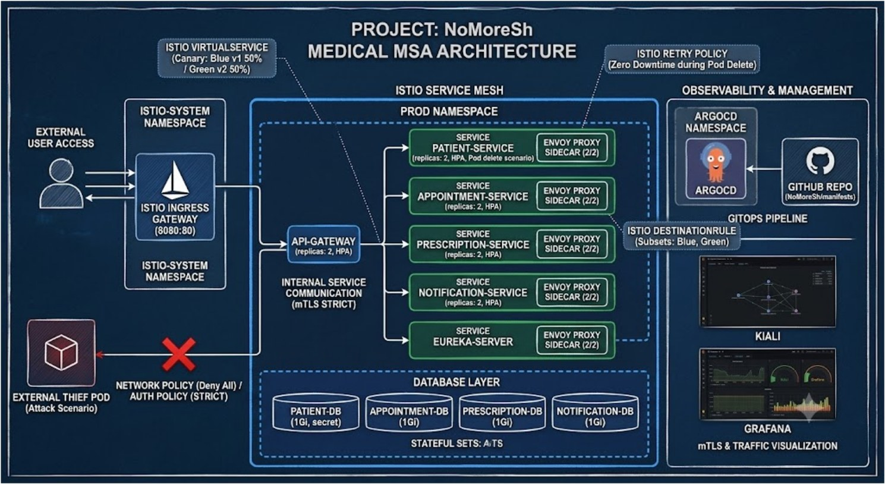

KT CLOUD TECH UP · 통합 프로젝트 · 팀 프로젝트 대상
MoongCheap · AI 역경매 공동구매 플랫폼
AWS EKS Multi-AZ 위의 FE · BE · AI 서비스를 공통 Chart와 GitOps 규칙 하나로 배포하는 구조를 만들고, 운영 중 생긴 병목을 실측으로 해결했다.
상세: resume.junu.dev/projects/moongcheap
Kubernetes 운영CI/CD · GitOps장애 원인 분석AWS EKS

내가 한 일
- Jenkins → ECR → GitOps Repo → ArgoCD ApplicationSet 흐름 설계, develop / prod / platform 별 Application 자동 생성
- FE · BE · AI가
moongcheap-service Chart 하나를 쓰고, 차이는 base → env → services → overrides 4단계 Values로만 관리
- Commit SHA 이미지 태그로 운영 중인 Pod가 어떤 커밋인지 바로 추적
- App Repo와 GitOps Repo를 분리하고, 서비스 팀이 넘길 항목(Port · Health Check · 환경 변수)을 정의해 배포 책임 경계를 정리
- AI 팀의 CPU · GPU · Memory · 추론 API 요구사항을 받아 같은 GitOps 흐름으로 AI · LLM 서비스 배포
트러블슈팅
노드에 여유가 있는데 ArgoCD · Jenkins가 Pending노드당 Pod 한도 17개로 Too many pods → VPC CNI Prefix Delegation · maxPods: 110을 Close 시간에 무중단 적용 17 → 110개
인프라를 켠 뒤 CI 서버가 1시간 반 넘게 안 열림기동마다 플러그인 100개 재설치 → initializeOnce: true 한 줄 96분 → 2.6분
백엔드 빌드 1회 45분빌드 Pod 메모리 과다 요청으로 빌드마다 노드 4번 추가 → Pod 46개 실측으로 요청값 재산정 45분 → 16분
KT CLOUD TECH UP · 실무 프로젝트
Hotel Booking · GitOps & Observability
특가 오픈 순간 트래픽이 몰리는 호텔 예약 MSA를 Terraform으로 만든 EKS에 올리고, push 한 번으로 dev/prod까지 이어지는 배포 흐름을 만들었다.
상세: resume.junu.dev/projects/hotel-booking
IaC (Terraform)CI/CD · GitOps모니터링 · 알림AWS EKS

내가 한 일
terraform-aws-modules/eks로 노드 그룹 · IRSA · Access Entry를 구성하고 ArgoCD도 Terraform Helm Release로 설치- GitHub Actions에서 변경된 서비스만 Matrix 빌드 → Gradle 테스트 → Trivy HIGH/CRITICAL 차단 → ECR Push
- CI가 Helm values의 이미지 태그를 커밋하면 ArgoCD(App of Apps · prune · selfHeal)가 dev/prod에 자동 배포
- prod 파이프라인에
helm lint와 렌더링 검사를 넣어 dev 네임스페이스 · 브랜치 설정 유입을 차단
- 공통 Chart에 HPA(2–5) · 무중단 Rolling Update · ALB Ingress 경로 라우팅 적용
트러블슈팅
ALB에서 로그인 후 401 반복HTTP ALB에서 Secure 쿠키가 저장되지 않음 → 쿠키 속성을 환경 변수로 분리해 환경별 values로 주입
배포 직후 Pod 반복 재시작초기화 전에 Liveness Probe가 실패 판정 → 공통값 initialDelaySeconds 45초 · failureThreshold 6
클러스터에서만 API 호출 실패CORS 분산 · 로컬 주소 직접 호출 → CORS 공통화, 상대경로 호출, Ingress /api/v1/* 경로 라우팅
LOAD TEST오버셀 0건K6 1,000명 · 재고 30
ERROR시스템 오류 0%매진(409)은 정상 응답으로 분리
DEPLOY5개 서비스 · 2개 환경push 한 번으로 자동 배포
KT CLOUD TECH UP · 기본 + 심화 프로젝트
Medical MSA · CI/CD & Service Mesh
의료 MSA의 CI/CD · GitOps 배포를 자동화하고, 심화 단계에서 Istio를 올려 트래픽 전환 · 장애 복구 · 내부 접근 차단을 직접 실험했다.
상세: resume.junu.dev/projects/cloud-native
Kubernetes 운영Service Mesh (Istio)CI/CD모니터링

내가 한 일
- Path Filter로 변경된 서비스만 Matrix 빌드, 테스트 실패 시 중단
- jdk → jre 멀티스테이지 · 비루트 실행 이미지, Trivy
exit-code 1로 취약 이미지 레지스트리 유입 차단
- git-sha 태그 Push → Helm values 갱신 → ArgoCD
medical-dev / medical-prod 분리 배포, 결과는 Slack으로 공유
- HPA(CPU 70%, 2–10) · Readiness/Liveness Probe · Rolling Update 구성, DB 장애 · Memory Leak 유도로 Probe 동작 검증
- 심화 팀장: Prometheus로 K8s · Envoy 메트릭 수집, Grafana → Kiali → ArgoCD 장애 추적 Runbook 정리
검증 · 트러블슈팅
Canary · Blue/GreenVirtualService 가중치로 20 → 50 → 70 → 100% 단계 전환, 50:50 → 0:100 즉시 전환
Pod 강제 종료 중 재시도retries.attempts: 3 적용 후 kubectl delete pod → Envoy가 살아 있는 Pod로 재시도 성공률 100%
Zero-Trust 접근 차단mTLS STRICT · AuthorizationPolicy 상태에서 Mesh 밖 Pod의 직접 호출 → RBAC: access denied
빌드 아키텍처 차이로 배포 실패QEMU · Docker Buildx 멀티 플랫폼 빌드로 해결
CI/CD4개 서비스 자동 배포Trivy 통과 이미지만 반영
CANARY4단계 전환20 → 50 → 70 → 100%
PROFESSIONAL EXPERIENCE · 2022.09 – 2026.03
Cocoavision · VFX Pipeline / Infrastructure
아티스트가 쓰는 DCC 환경과 Linux Render Farm을 운영하며, 반복되는 설치 · 설정 · 제출 작업을 자동화하고 제작이 멈추는 원인을 해결했다.
상세: resume.junu.dev/projects/cocoavision
IaC (Ansible)Linux 서버 운영Python 자동화 도구장애 원인 분석
Case 1 · Ansible Render Farm
- 문제 수십 대 Render Node에 SSH로 접속해 패키지 · Mount · 팀별 Tool을 노드마다 수동 설정, 설정 편차 발생
- 해결 Inventory로 노드를 그룹화하고 반복 작업을 Playbook으로 선언해 일괄 적용
- 결과 서버별 수동 작업을 재사용 가능한 운영 코드로 전환
Case 2 · PXE 네트워크 설치
- 문제 USB로 장비마다 OS를 설치해, 장비가 늘수록 사람이 하는 단계가 증가
- 해결 PXE 부팅 · DHCP/HTTP 설치 파일 제공 · Kickstart 자동 설치를 연결
- 결과 초기 세팅을 같은 절차로 반복할 수 있는 네트워크 설치로 전환
Case 3 · Tractor 제출 도구
- 문제 작업자가 렌더 제출 정보를 직접 구성하고 DCC마다 절차가 달라 누락 · 설정 차이 발생
- 해결 Houdini · Nuke용 Custom Submit Node를 Python으로 개발. 사용자 교육 대신 제출 규칙을 도구에 넣음
- 결과 DCC 안에서 일관된 제출 경로를 제공해 Submission Workflow 표준화
장애 대응 · Farm에서만 실패하는 렌더
- 로컬에선 열리지만 Farm 제출 후 반복 실패해 제작이 중단
- Tractor Log → DCC/Plugin 버전 → 환경 변수 → 파일 경로 → Mount 순으로 실행 환경 차이를 비교해 원인 특정
- 설정 수정 후 같은 유형이 다른 노드에서 반복되지 않도록 운영 절차와 자동화 대상에 반영
FARM수십 대 노드Linux Render Node 운영
AUTOMATION3개 영역 자동화Submit · Provisioning · Configuration
WORK STYLEFix → Standardize → Automate반복 이슈를 구조로 줄임